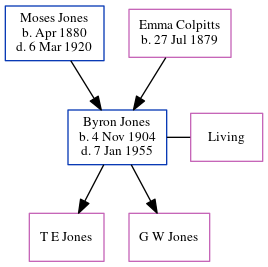

Moses Jones 1880 - 1920
[ Home ] | [ Calendar ] | [ Surnames Index ] | [ Errors ] | [ Family History ]Moses Jones, the husband of Emma Alverda Colpitts (the third cousin twice-removed on the father's side of Nigel Horne), was born in New Brunswick, Canada in Apr 18801 and married Emma (with whom he had 2 children: Byron Moses and Leona, along with 1 surviving child) in Westmorland, New Brunswick, Canada on 24 Jun 19032. In 1911, he was living in Westmorland1 which is where he died on 6 Mar 1920.
Children
- Byron Moses was born on 4 Nov 1904
Citations
- 1911 Census of Canada Online publication - Provo, UT, USA: Ancestry.com Operations Inc, 2006. .Original data - Library and Archives Canada. Census of Canada, 1911. Ottawa, Ontario, Canada: Library and Archives Canada, 2007. http://www.collectionscanada.gc.ca/databases/census-19 (Marital Status: Married; Relation to Head of House: Head)
- New Brunswick, Canada, Marriages, 1789-1950
Family Tree
Map
Generated by ged2site. Last updated on Jul 3, 2024
Known Issues
Death date (6 Mar 1920) has no citations
No records of living with anyone